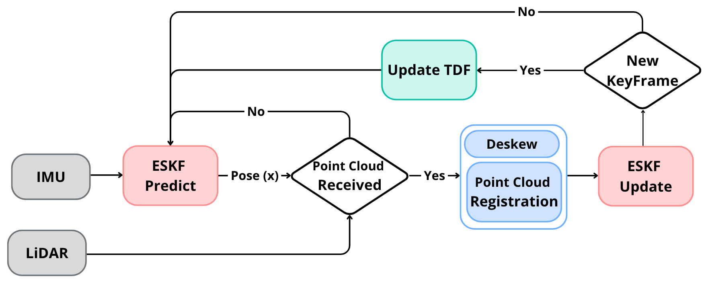
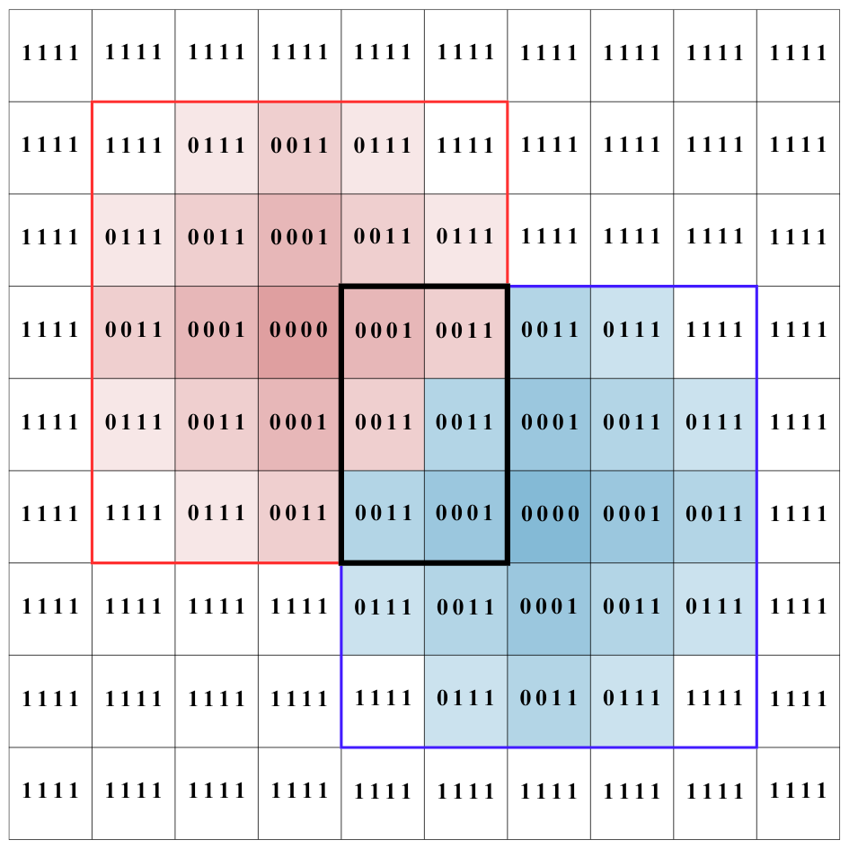

6DoF Direct LiDAR-Inertial Odometry based on Simultaneous
Truncated Distance Field Mapping
D-LIO is a 6DoF Direct LiDAR-Inertial Odometry approach that simultaneously maps L1 truncated distance fields (Fast-TDF) on CPU. This continuous representation lets it work directly with raw 3D LiDAR data online — without LiDAR feature selection or tracking — casting point-cloud registration as a nonlinear optimization while updating the map at constant time, independently of its size. Benchmarked against state-of-the-art odometry methods, D-LIO matches or exceeds their accuracy.

The D-LIO algorithm incrementally estimates the system pose using an Extended Kalman Filter (EKF). It integrates inertial measurements for pose prediction and uses point cloud-to-map registration for pose updates.
The environment is mapped based on the Truncated Distance Field (TDF). This alignment is used to constrain the EKF's pose and velocity. Whenever the estimated pose variation exceeds a threshold, the TDF map is updated by incorporating new information.
The core of D-LIO is the Fast Truncated Distance Field (Fast-TDF). This method represents the environment as a 3D grid, but instead of just storing "occupied" or "free", it efficiently encodes the L1 distance to the nearest obstacle.
To achieve constant-time map updates, it uses a pre-calculated binary kernel. The distance in this kernel is represented as a bit-set mask, where each set bit accounts for the distance.
This encoding has a key advantage: the shortest distance from multiple overlapping kernels can be found with a single, highly efficient bitwise-AND operation. This avoids complex comparisons and makes the process parallelizable on the CPU.
| Binary Mask (4-bit) | L1 Distance |
|---|---|
| 0000 | 0 (Center) |
| 0001 | 1 |
| 0011 | 2 |
| 0111 | 3 |
| 1111 | 4 (Max / Truncation) |

We benchmarked D-LIO on three challenging public datasets: VIRAL, Newer College, and VBR. These tests evaluate performance in diverse scenarios, including aerial (UAV) and ground platforms, against several state-of-the-art (SOTA) methods.
The Absolute Translation Error (ATE) [m] was measured on the VIRAL and Newer College datasets. As shown in the table, D-LIO achieves consistently high accuracy, ranking first or second in most sequences. It remains highly competitive even when compared to methods that utilize back-end optimization (like LIO-SAM or PIN-SLAM), which D-LIO does not.
| Sequence | D-LIO | A-LOAM | M-LOAM | KISS-ICP | FAST-LIO2 | LIO-SAM | PIN-SLAM |
|---|---|---|---|---|---|---|---|
| eee01 | 0.074 | 0.212 | 0.249 | 2.383 | 0.166 | 0.075 | - |
| eee02 | 0.073 | 0.199 | 0.168 | 1.586 | 0.100 | 0.069 | 2.056 |
| eee03 | 0.121 | 0.148 | 0.233 | 1.055 | 0.142 | 0.101 | 0.615 |
| nya01 | 0.080 | 0.077 | 0.123 | 0.359 | 0.127 | 0.076 | 0.086 |
| nya02 | 0.104 | 0.091 | 0.191 | - | 0.151 | 0.070 | 0.092 |
| nya03 | 0.065 | 0.108 | 0.226 | 1.389 | 0.130 | 0.137 | 0.455 |
| sbs01 | 0.085 | 0.103 | 0.173 | 1.353 | 0.130 | 0.089 | 0.205 |
| sbs02 | 0.067 | 0.091 | 0.147 | 1.435 | 0.144 | 0.083 | 0.528 |
| sbs03 | 0.098 | 0.367 | 0.153 | 1.037 | 0.126 | 0.140 | 0.708 |
| q-easy | 0.093 | 0.085 | 0.141 | 0.100 | 0.100 | 0.074 | 0.090 |
To evaluate performance in large-scale environments, we used the VBR dataset, featuring long trajectories (up to 2.5 km) in complex indoor/outdoor settings. D-LIO demonstrates robust scalability, maintaining low ATE (m) and Relative Pose Error (RPE) (%).
| Sequence | D-LIO | KISS-ICP | PIN-SLAM |
|---|---|---|---|
| diag | 0.560 (0.72%) | 1.397 (1.79%) | 0.362 (0.47%) |
| pincio | 7.390 (3.45%) | 0.784 (0.49%) | 0.647 (0.45%) |
We also evaluated the 3D reconstruction quality on the Newer College (Quad-Easy) sequence using standard metrics: Accuracy, Completeness, Chamfer-L1 (C-L1), and F-Score. D-LIO produces highly competitive maps, achieving the best completeness and ranking second for C-L1 and F-Score among all tested odometry-driven methods.
| Method | Pose | Acc. (cm) | Comp. (cm) | C-L1 (cm) | F-Score (%) |
|---|---|---|---|---|---|
| VDB-Fusion | KissICP | 14.03 | 25.46 | 19.75 | 69.50 |
| SHINE | KissICP | 14.87 | 20.02 | 17.45 | 68.85 |
| NKSR | KissICP | 15.67 | 36.87 | 26.67 | 58.57 |
| PUMA | Odometry | 15.30 | 71.91 | 43.60 | 57.27 |
| SLAMesh | Odometry | 19.21 | 48.83 | 34.02 | 45.24 |
| NeRF-LOAM | Odometry | 12.89 | 22.21 | 17.55 | 74.37 |
| S²KAN-SLAM | Odometry | 13.32 | 18.80 | 16.06 | 72.03 |
| ImMesh | Odometry | 15.05 | 19.80 | 17.42 | 66.87 |
| PIN-SLAM | Odometry | 11.55 | 15.25 | 13.40 | 82.08 |
| KN-LIO | Odometry | 8.18 | 11.65 | 9.92 | 91.01 |
| D-LIO | Odometry | 12.14 | 10.63 | 11.39 | 83.83 |
The system's performance was analyzed on an Intel Core i7-13700H CPU without GPU acceleration. The map update step is the most computationally expensive, as its time strongly depends on point cloud density. However, optimization runs at the sensor rate (10 Hz) while updates are triggered less frequently, balancing the load.
| Dataset | Points (avg.) | Total (s) | Optimize (s) | Update (s) |
|---|---|---|---|---|
| eee | ~20k | 0.048 ± 0.055 | 0.046 ± 0.013 | 0.155 ± 0.009 |
| nya | ~20k | 0.049 ± 0.034 | 0.042 ± 0.014 | 0.146 ± 0.016 |
| sbs | ~20k | 0.051 ± 0.048 | 0.044 ± 0.016 | 0.142 ± 0.034 |
| q-easy | ~100k | 0.479 ± 0.196 | 0.442 ± 0.158 | 0.470 ± 0.095 |
| diag | ~190k | 0.603 ± 0.240 | 0.565 ± 0.194 | 0.315 ± 0.085 |
| pincio | ~140k | 0.576 ± 0.256 | 0.505 ± 0.182 | 0.563 ± 0.146 |
Qualitative results, 3D reconstructions, and estimated trajectories from the datasets.
If you use D-LIO in your research, please cite our paper:
@ARTICLE{11248856,
author={Coto-Elena, L. and Maese, J.E. and Merino, L. and Caballero, F.},
journal={IEEE Robotics and Automation Letters},
title={D-LIO: 6DoF Direct LiDAR-Inertial Odometry Based on Simultaneous Truncated Distance Field Mapping},
year={2026},
volume={11},
number={1},
pages={169-176},
keywords={Odometry;Laser radar;Point cloud compression;Accuracy;Feature extraction;Location awareness;Kernel;Simultaneous localization and mapping;Real-time systems;Three-dimensional displays;Mapping;odometry;simultaneous localization and mapping},
doi={10.1109/LRA.2025.3632615}}